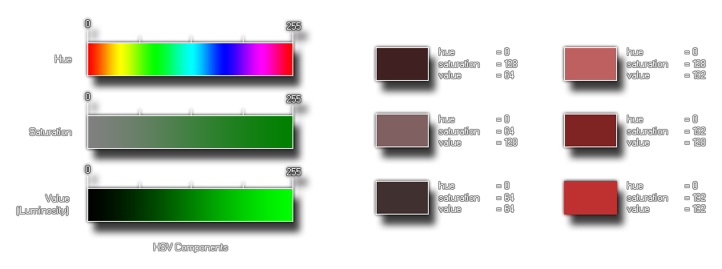

Syntax:
make_colour_hsv(hue, sat, val);
| Argument | Description |
|---|---|
| hue | The hue of the colour |
| sat | How saturated the colour is |
| val | How dark the colour is |
Returns: value
GameMaker: Studio provides this function (as well as
others) to permit the user to make their own colours. This
particular function takes three component parts, the hue,
the saturation and the value (also know as
"luminosity") to create the colour desired. These values are taken
as being between 0 and 255 so you can make 16,777,216 (256*256*256)
colours with this! Below you can see an image of how these
components look when separated: 
The image on the left is a break-down of the individual components
of the function, and then on the right is an illustration of how
changing these components affects the end colour. As you can see,
even without changing the hue (it stays at 0, red), we can
dramatically change the colour with the other two settings, with
saturation making the colour tone go from grey (0) to a pure tone
(255), and with the value making it go from darker (0) to lighter
(255).
col = make_colour_hsv(100, 145, 255);
The above code uses the function to create a colour and store its value in the variable "col" for later use.